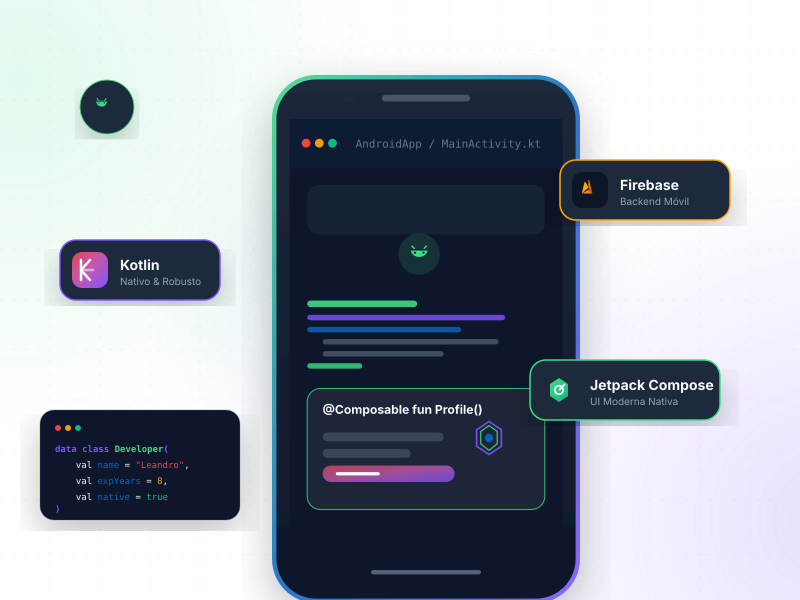

Desarrollo Android
Construcción de aplicaciones móviles Android modernas, funcionales y adaptadas a las necesidades del producto.
Creo aplicaciones móviles funcionales, escalables y orientadas a resolver problemas reales, combinando desarrollo Android nativo, arquitectura sólida, alto rendimiento y UI centrada en el usuario.

Construyendo el futuro de la movilidad Android a través del código nativo potente.
Soy desarrollador Android con más de 8 años de experiencia en el desarrollo de aplicaciones móviles. Me especializo en la creación de soluciones Android utilizando Kotlin, Jetpack Compose, Firebase, consumo de servicios mediante Retrofit, persistencia local con Room y programación asíncrona con Coroutines y Flow.
A lo largo de mi experiencia he trabajado con diferentes enfoques de arquitectura como MVP, MVC, MVVM y MVI, adaptando cada solución a las necesidades del proyecto, la complejidad del producto y los objetivos técnicos del equipo.
Me enfoco en construir aplicaciones claras, funcionales, escalables y pensadas para ofrecer una buena experiencia al usuario. También tengo interés constante en mejorar la calidad del código, la organización de los proyectos y el diseño de interfaces modernas para Android.
Desarrollo soluciones móviles Android enfocadas en funcionalidad, rendimiento, diseño y escalabilidad.
Construcción de aplicaciones móviles Android modernas, funcionales y adaptadas a las necesidades del producto.
Diseño e implementación de interfaces limpias, intuitivas y centradas en la experiencia del usuario.
Implementación de servicios del ecosistema Firebase para autenticación, bases de datos (Firestore/Realtime), almacenamiento, analítica, notificaciones y más.
Organización del código bajo patrones estructurados como MVP, MVC, MVVM y MVI para facilitar orden, mantenibilidad, escalabilidad y la fácil evolución del producto.
Integración altamente eficiente de servicios web REST mediante Retrofit, control de flujos de asincronía, estados HTTP e intercepción de datos.
Implementación de almacenamiento local offline inteligente mediante Room Database para proveer soporte técnico completo de persistencia de datos estructurados.
Diseño, estructuración y desarrollo completo de nuevas aplicaciones de manera escalable y optimizada, asegurando excelentes bases arquitectónicas desde la primera línea de código.
Tecnologías y herramientas que utilizo para construir soluciones móviles Android modernas.
Soy un desarrollador Android enfocado en crear aplicaciones móviles modernas, estables y funcionales, combinando experiencia técnica, criterio de diseño y buenas prácticas de desarrollo. Mi objetivo es construir soluciones que no solo funcionen correctamente, sino que también sean claras para el usuario, claras para el equipo técnico y escalables para el crecimiento del producto.
Desarrollador Android especializado en Kotlin y desarrollo móvil nativo de alta performance.
Más de 8 años desarrollando e implementando soluciones móviles Android del lado del cliente.
Kotlin, Jetpack Compose, Firebase, Room, Retrofit, Coroutines y Flow para arquitecturas reactivas.
MVP, MVC, MVVM y MVI, según la necesidad técnica del equipo y la complejidad del proyecto móvil.
Aplicaciones móviles con excelente rendimiento, interfaz clara, experiencia de usuario cuidada y código organizado y escalable.
Proyectos de envergadura freelance, oportunidades como Android Developer Senior y colaboraciones profesionales de alto nivel.
"Mi propósito es transformar ideas en aplicaciones Android útiles, bien estructuradas y listas para crecer."
Estoy disponible para proyectos freelance, oportunidades profesionales como Android Developer y colaboraciones relacionadas con el desarrollo móvil Android de alto nivel profesional.
Puedes revisar mi actividad y repositorios públicos en GitHub.
Para propuestas de desarrollo freelance, oportunidades de contratación técnica como Android Developer o contactos para colaboraciones, puedes contactarme principalmente por LinkedIn.